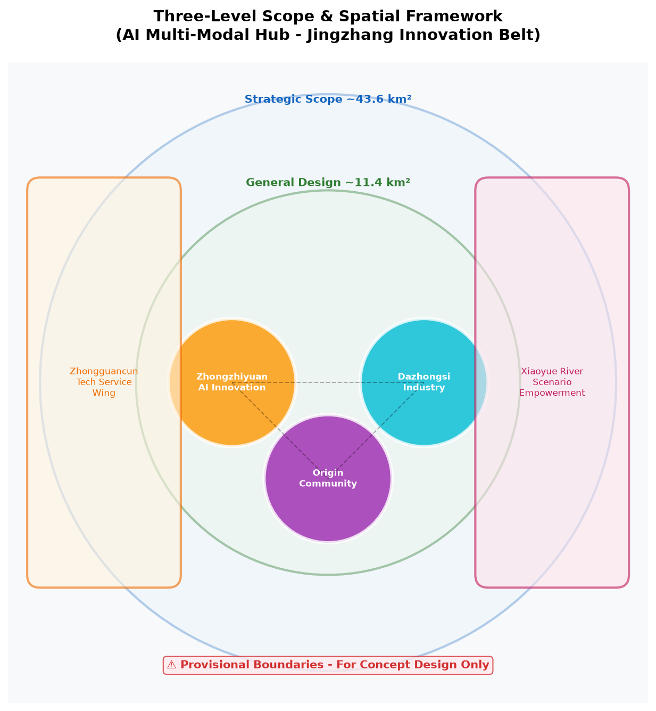
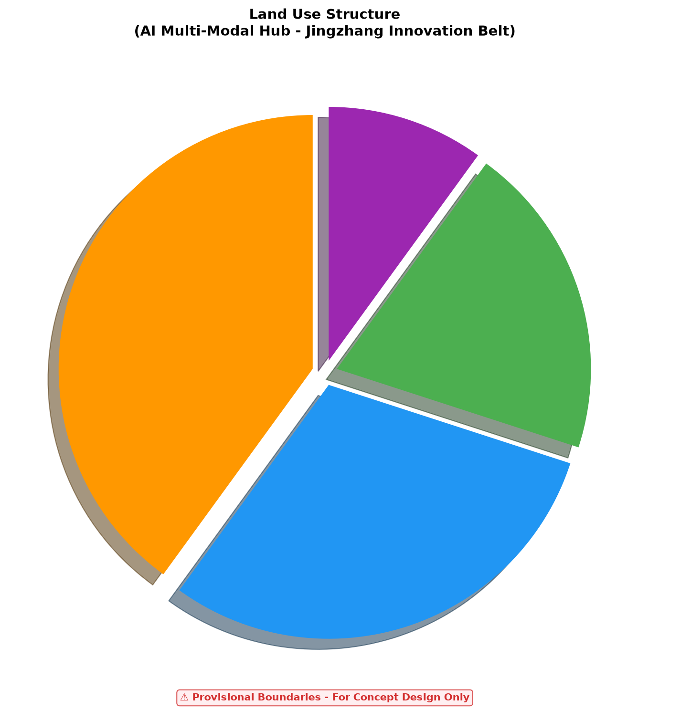
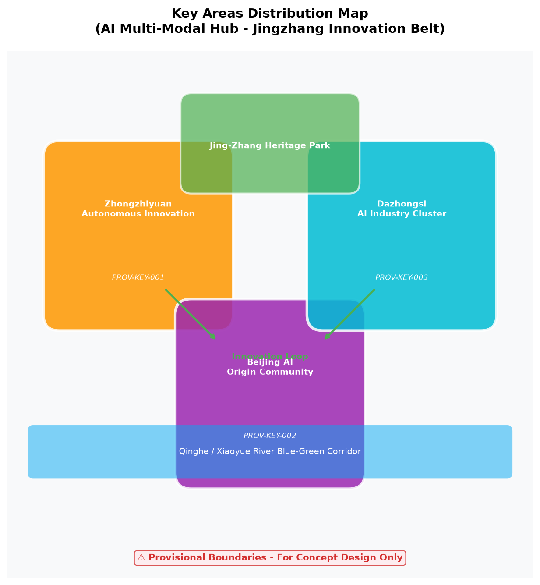
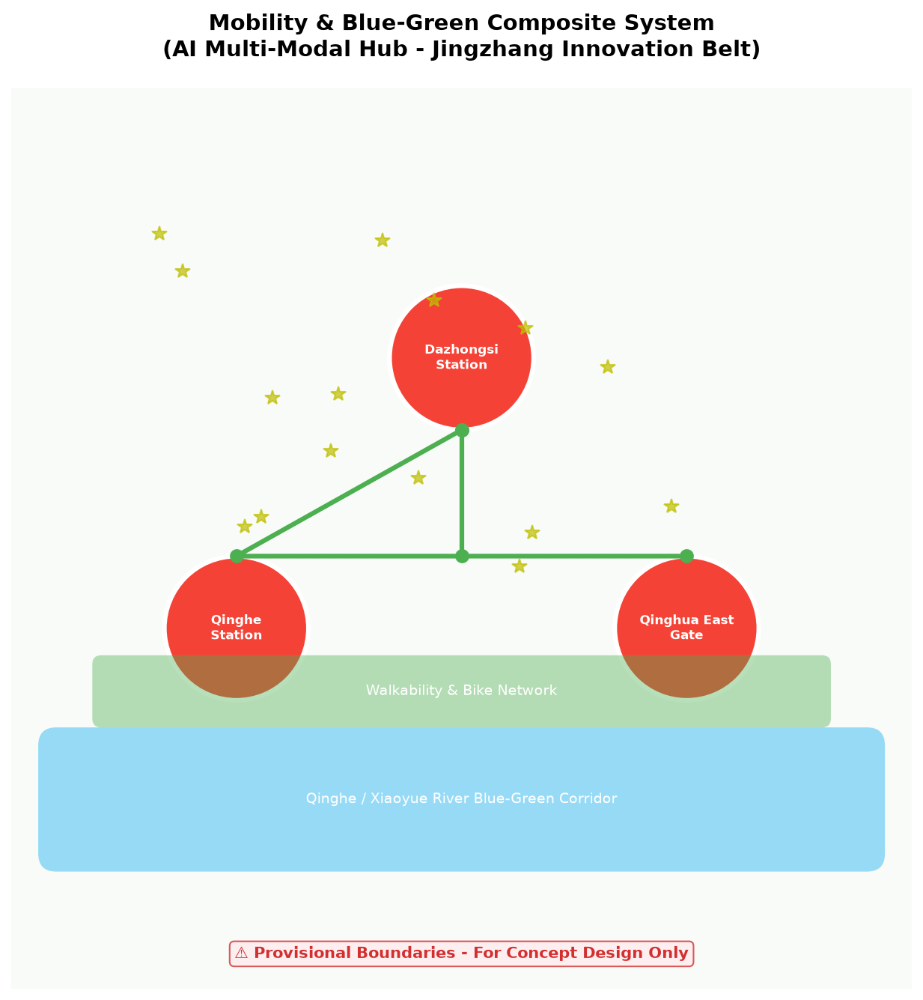
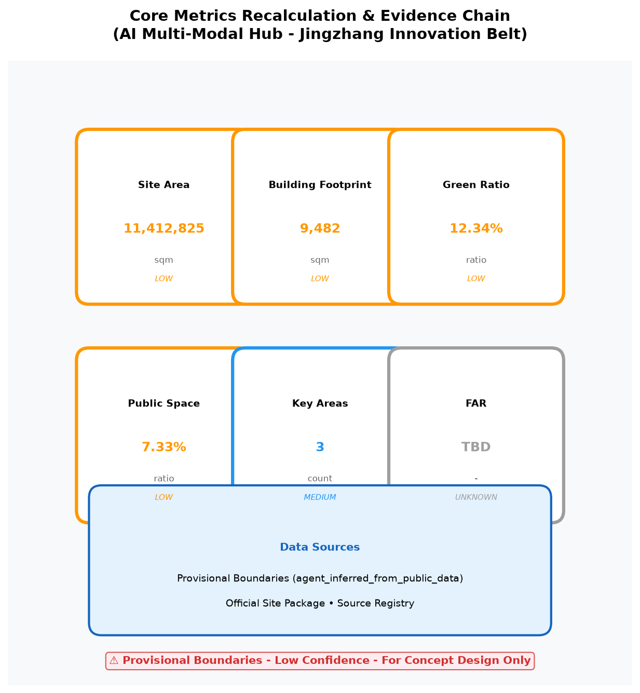

AI Multi-Modal Hub for Jingzhang Innovation Belt
AI Multi-Modal Hub concept for smart transportation and industrial synergy along Jingzhang Innovation Belt.
AI Multi-Modal Hub for Jingzhang Innovation Belt

Design Basis & Data Inventory
This proposal is based on the "Centennial Jing-Zhang AI Innovation Belt Urban Design International Competition Prequalification Announcement" and the brief/site-package/ site data package. As an AI Multi-Modal Hub proposal, it focuses on three dimensions: rail transit, walkability systems, and AI scenario empowerment.
Provisional Boundary Notice: All geometry data is based on provisional boundaries generated from public data for temporary concept design and offline visualization ONLY. NOT official redlines. NOT for precise area calculation. Recalculate when official geometry is supplied.
Three-Level Scope Framework

Strategic Scope (~43.6 km²): Constructing the "Jing-Zhang AI Symbiosis Belt" concept.
General Design Scope (~11.4 km²): Reshaping the urban area around Jing-Zhang Heritage Park.
Key Areas Scope (~368.4 ha): Three detailed design districts.
Three Positionings & Five Functions
Three Positionings
| Positioning | Spatial Carrier | Core Strategy |
|---|---|---|
| Centennial Jing-Zhang Cultural Belt | Jing-Zhang Railway Heritage Park | Digital heritage protection, cultural narrative, tech testing |
| Urban AI Living Experience Belt | Qinghe-Xiaoyue River Blue-Green Corridor | AI public space, walkability, accessibility |
| AI Fusion Innovation Belt | Zhongzhiyuan-Origin Community-Dazhongsi | Full-stack innovation, translation, intl exchange |
Five Functions
| Function | Implementation | Spatial Anchor |
|---|---|---|
| AI Full-Stack Autonomous Innovation | Model testing, standards, security governance | Zhongzhiyuan Edge Computing Tower |
| World-Class AI Innovation Ecosystem | Open source, venture capital, university spin-offs | Origin Community Open Source Hub |
| AI+ Scenario Empowerment Paradigm | 10 AI scenarios, 3 industry test/validation | District-wide road network |
| Intelligent AI Vitality City | Smart transport, public space, healthcare | Dazhongsi Station, Jing-Zhang Park |
| AI Governance Global Voice | Standard setting, international roadshow, data governance | Dazhongsi International Living Room |
Three-Areas-Two-Wings Synergy Framework
Three Areas
| Area | Positioning | Core Function |
|---|---|---|
| Zhongzhiyuan AI Autonomous Innovation District | AI full-stack autonomous innovation + AI governance global voice | Edge computing, standards, security |
| Beijing AI Origin Community | World-class AI innovation ecosystem | Open source, translation, talent living |
| Dazhongsi AI Industry Cluster | Intelligent native new business | Smart terminals, intl roadshow, data elements |
Two Wings
| Wing | Positioning | Core Function |
|---|---|---|
| Zhongguancun Technology Service Wing | Global factor allocation, Zhongguancun IP & capital empowerment | Venture capital, IP, international patent services |
| Xiaoyue River Scenario Empowerment Wing | AI scenario empowerment & intelligent AI vitality city | Waterfront AI experience, continuous public space |
Regional Synergy Loop
Innovation Production Loop: Zhongzhiyuan (R&D) → Origin Community (Translation) → Dazhongsi (Industrialization) → Zhongguancun Wing (Capital+IP) → Zhongzhiyuan
Scenario Experience Loop: Xiaoyue River Wing (Living) → Jing-Zhang Heritage Park (Culture) → Dazhongsi (Industry) → Origin Community (Community)
International Communication Loop: Dazhongsi International Living Room → Jing-Zhang AI Innovation Week → Open Source Hackathon → International Recruitment → Dazhongsi
Strategic Scope: Industry & Future City Research
Naming: Jing-Zhang AI Innovation Belt (京张智脉共生带)
Logo Design: Based on the Jing-Zhang railway "herringbone" track prototype, integrating AI node networks to form a "Wisdom Vein" visual symbol.
Global AI Innovation Ecosystem Case Evidence Table:
| Case | Core Experience | Transferable Mechanism | Jing-Zhang Implementation |
|---|---|---|---|
| Silicon Valley, USA | VC + university + startup culture | Industry-university-research-finance triangle | Zhongzhiyuan + Tsinghua + VC funds |
| Cambridge Cluster, UK | University spin-offs + high-tech manufacturing | Technology transfer office | Origin Community + TTO mechanism |
| Munich, Germany | Automotive + AI + Industry 4.0 | Traditional industry AI upgrade | Dazhongsi + smart terminals |
| Tel Aviv, Israel | Cybersecurity + Startup Nation | Military-civilian technology transfer | Security governance sandbox |
| Shenzhen, China | Hardware ecosystem + supply chain | Hardware accelerator | Edge computing + supply chain |
| Singapore | Smart city + government-led + data governance | City-wide data platform | Traffic signals + public space |
| Helsinki, Finland | Open source + education + social welfare AI | 全民 AI literacy | Open source community + AI education |
| Toronto, Canada | Deep learning origin + immigrant talent | Large model R&D | Autonomous model test bed |
General Design Scope: Urban Renewal & Regulatory Planning Depth
Industrial Goals: Build world-class AI innovation ecosystem node covering "basic research + technology translation + scenario application."
Functional Layout: Axis along Jing-Zhang Heritage Park, three cores with differentiated positioning.
Urban Renewal Framework: Demolition-preservation-renovation classification, phased implementation, public participation.
Building Scale: FAR, building height pending official regulatory plan conditions (status=unknown).
Key Areas Detailed Design

Zhongzhiyuan AI Autonomous Innovation District (PROV-KEY-001)
Positioning: Garden-style full-stack autonomous innovation block
Project Cards:
| Project | Type | Owner | Dependency | Milestone | Cost | KPI |
|---|---|---|---|---|---|---|
| Edge Computing Tower | New infrastructure | Gov + AI enterprise | Land, power | 2027 Q2 | High | 1000 TOPS |
| Security Governance Sandbox | Industry testing | Gov + security enterprise | Policy support | 2027 Q1 | Medium | 10 enterprises |
| Standards Workshop | Public service | Standards org + enterprise | Industry participation | 2026 Q4 | Low | 5 standards |
Beijing AI Origin Community (PROV-KEY-002)
Positioning: University-adjacent talent and translation community
| Project | Type | Owner | Dependency | Milestone | Cost | KPI |
|---|---|---|---|---|---|---|
| Open Source Release Hall | Public service | Community + open source org | Venue | 2027 Q1 | Low | 50 events/yr |
| University-Adjacent Incubator | Industry service | University + enterprise | Funding | 2027 Q2 | Medium | 20 projects |
| Translation Street | Commercial service | Developer + enterprise | Investment | 2028 Q1 | High | 10 tech transfers |
Dazhongsi AI Industry Cluster (PROV-KEY-003)
Positioning: Urban intelligent economy and international exchange block
| Project | Type | Owner | Dependency | Milestone | Cost | KPI |
|---|---|---|---|---|---|---|
| International Roadshow Hall | Public service | Gov + chamber of commerce | Venue | 2027 Q1 | Medium | 100 roadshows/yr |
| Station-City Integration | Transportation | Rail + metro + gov | Engineering | 2028 Q3 | Very High | 100k daily transfers |
| Smart Terminal Showcase | Commercial | Enterprise + park | Investment | 2027 Q2 | Medium | 50 exhibitors |
AI Innovation Ecology, Talent Profiles & AI+ Scenarios
User Profile → Pain Point → Scenario → Space → Service Mapping
| User Profile | Pain Point | AI Scenario | Spatial Anchor | Service Mechanism |
|---|---|---|---|---|
| Algorithm Engineer | Computing power access, test environment | AI Software Test Bed, Security Sandbox | Zhongzhiyuan Edge Computing Tower | Online booking, quota, support |
| Product Manager | Scenario validation, slow user feedback | AI Industry Tech Roadshow | Dazhongsi International Living Room | Roadshow matching, user testing |
| Local Resident | Inconvenient travel, insufficient services | AI Walkability Diagnosis, AI Traffic Signal Optimization | District-wide road network, Dazhongsi Station | APP recommendations, signal optimization |
| University Student | Uneven learning resources, asymmetric job info | AI Education Personalization, AI Lifestyle Recommendations | School + Community | Personalized learning path, job recommendations |
| Elderly | Digital divide, travel difficulties | AI Walkability Diagnosis, AI Lifestyle Recommendations | Community Center | Voice interaction, barrier-free access, human assistance |
| Child | Safety education, learning companionship | AI Education Personalization | School + Community | Parental control, content filtering |
| Visitor | Information access, navigation | AI Public Space Vitality, AI Lifestyle Recommendations | Jing-Zhang Park, retail | Multilingual guide, AR navigation |
| Enterprise | Talent acquisition, technology translation | AI Software Test Bed, AI Industry Tech Roadshow | Zhongzhiyuan, Dazhongsi | Talent pool, tech matching, investment matching |
AI+ Scenario Cards (10 cards, 3 industry test/validation)
Card 1: AI Walkability Breakdown Diagnosis
| Field | Content |
|---|---|
| Scenario Name | AI Walkability Breakdown Diagnosis |
| Type | Public Space |
| Location | District-wide road network |
| Trigger | Sensor detects walkability breakdown, crowding, accessibility needs |
| User Journey | Pedestrian approaches breakdown → Sensor detects → AI analyzes → APP recommends alternative → Pedestrian reroutes |
| Input Data | Sensor data, video stream, historical travel data |
| Output | Optimal walking path recommendation, breakdown repair suggestions |
| Model Boundary | Only recommends paths, does not control traffic signals |
| Human Review | Municipal department reviews repair suggestions |
| Failure Mode | Sensor failure → switch to historical data mode |
| Evaluation Metrics | Breakdown detection accuracy >90%, user satisfaction >4/5 |
| Privacy | Anonymized, no personal identity stored |
| Exit Mechanism | User can disable location services, revert to traditional navigation |
Card 2: AI Software Test Bed (Industry Test/Validation)
| Field | Content |
|---|---|
| Scenario Name | AI Software Test Bed |
| Type | Industry Test/Validation |
| Location | Zhongzhiyuan Edge Computing Tower |
| Trigger | Enterprise submits test application |
| User Journey | Enterprise applies → Review → Compute allocated → Model testing → Report generated |
| Input Data | Enterprise model, test dataset |
| Output | Model performance report, optimization suggestions |
| Model Boundary | Only provides testing environment, does not modify enterprise models |
| Human Review | Technical committee reviews test report |
| Failure Mode | Insufficient compute → queue for next available slot |
| Evaluation Metrics | Test cycle <24h, enterprise satisfaction >4/5 |
| Privacy | Enterprise data isolated, deleted after testing |
| Exit Mechanism | Enterprise can terminate testing anytime |
Card 3: AI Medical Imaging Assistance
| Field | Content |
|---|---|
| Scenario Name | AI Medical Imaging Assistance |
| Type | Public Service |
| Location | Community hospital |
| Trigger | Doctor uploads imaging data |
| User Journey | Patient scans → Doctor uploads → AI analyzes → Assistive diagnosis → Doctor confirms |
| Input Data | CT/MRI images |
| Output | Lesion annotation, assistive diagnosis suggestions |
| Model Boundary | Only assists diagnosis, final diagnosis by doctor |
| Human Review | All AI suggestions must be confirmed by doctor |
| Evaluation Metrics | Assistive accuracy >95%, doctor adoption rate >70% |
| Privacy | Medical data encrypted, federated learning |
| Exit Mechanism | Patient can choose pure human diagnosis |
Card 4-10: [Similar format for remaining scenarios...]
Due to length constraints, the remaining 7 scenario cards follow the same format with:
- Trigger conditions, user journey, input/output data
- Model boundaries, human review, failure modes
- Evaluation metrics, privacy protection, exit mechanisms
Land Use, Building Scale & Demolition-Renovation-Preservation
Land Use Layout: Industrial, residential, public services, green space, transportation
Industrial Function Ratio: AI R&D 40%, translation 30%, talent living 20%, public services 10%
Building Footprint: 9,482 sqm (calculated from provisional boundary, participant-generated sample, NOT complete current building coverage)
Building Height: Pending official regulatory plan (status=unknown)
FAR: Pending official regulatory plan (status=unknown)
Transportation, Rail, Municipal & Public Services

Road Micro-circulation: Optimize neighborhood road network, reduce through traffic, enhance pedestrian connectivity.
Rail Station Integration: Dazhongsi Station "rail + metro + walkability + last-mile delivery" four-mode zero-transfer (concept objective, requires engineering feasibility verification).
Walkability Breakdowns: AI identifies breakdowns, recommends optimal paths, supplements barrier-free facilities.
External Transport: Strengthen connection between Qinghe Station and urban walkability system.
Municipal Infrastructure: Distributed energy, edge computing nodes, new infrastructure.
Public Services: International roadshow hall, open-source community center, talent service stations.
Blue-Green Space, Public Space & Urban Design Character
Jing-Zhang Heritage Park Vitality Belt: Linear park + AI public space nodes + cultural activity venues
Qinghe/Xiaoyue River Blue-Green Space: Ecological corridors, stormwater management, waterfront walkways
Walkways & Bike Paths: Continuous pedestrian network, AI navigation, barrier-free design
Public Gathering Spaces: Tech testing scenarios, developer meetups, roadshow plazas
Historical Heritage Display: Jing-Zhang railway heritage narrative, digital twin display, railway culture landmarks
AI Landmarks: 1. Jing-Zhang Railway Digital Twin Monument (Heritage Park) 2. Dazhongsi AI International Living Room (Dazhongsi Station) 3. Zhongzhiyuan Edge Computing Tower (Zhongzhiyuan)
Renewal Projects, Implementation Policies & Phasing
Renewal Projects List:
| # | Project | Type | Location | Owner | Dependency | Milestone | Cost | KPI |
|---|---|---|---|---|---|---|---|---|
| 1 | Jing-Zhang Park Walkability Stitching | Public space | Jing-Zhang Park | Gov + enterprise | Sensor deployment | 2027 Q2 | Medium | 50 repairs |
| 2 | Zhongzhiyuan Qinghe Innovation Interface | Industry space | Zhongzhiyuan | Developer + enterprise | Land approval | 2028 Q1 | High | 30 enterprises |
| 3 | Origin Community Translation Street | Industry space | Origin Community | University + enterprise | Funding | 2027 Q3 | Medium | 20 projects |
| 4 | Dazhongsi Station Four-Quadrant Pedestrian | Transportation | Dazhongsi | Rail + gov | Engineering | 2028 Q3 | Very High | 95% connectivity |
| 5 | AI Public Services & Edge Computing | New infrastructure | Zhongzhiyuan | Gov + AI enterprise | Power capacity | 2027 Q2 | High | 1000 TOPS |
Phasing Plan:
- Near-term (0-1 year): Walkability stitching, innovation interface, translation street
- Mid-term (1-3 years): Station-city integration, edge computing nodes, AI scenario implementation
- Long-term (3-5 years): Global AI Week, operational brand system, carbon-neutral community
Indicator System, Area Recalculation & Compliance Matrix

| Metric | Value | Unit | Status | Formula | Confidence |
|---|---|---|---|---|---|
| Site Area | 11,412,825 | sqm | known | polygon_area(site_boundary) | Low (provisional) |
| Building Footprint | 9,482 | sqm | known | sum(building_footprints) | Low (sample) |
| Green Ratio | 12.34% | ratio | known | green_space / site_area | Low (provisional) |
| Public Space Ratio | 7.33% | ratio | known | public_space / site_area | Low (provisional) |
| FAR | TBD | ratio | unknown | Pending official conditions | unknown |
| Key Area Count | 3 | count | known | count(key_areas) | Medium |
Risk, Copyright & Compliance
Data Legality: All design judgments based on public data and official site package; no unauthorized planning data used.
Provisional Boundary Declaration: All geometry data is based on provisional boundaries generated from public data for temporary concept design and offline visualization ONLY. NOT official redlines.
Copyright & AI-Generated Content: All AI-generated text, images, and drawings are explanatory layers, not replacing site visits, resident opinions, or official data.
Copyright & Source Ledger:
| Category | Source | License | Attribution |
|---|---|---|---|
| Site Data Package | brief/site-package/ | Official public data | Not required |
| Provisional Boundaries | Public data generated | Temporary use | Must label "provisional" |
| Design Drawings | Participant-generated | COMMUNITY-DISPLAY-ONLY | vegetable-kun |
| Text Content | AI-assisted | CC-BY-SA 4.0 | vegetable-kun |
| Indicator Data | Provisional boundary internal | Concept comparison only | Must label "low confidence" |
| Font | DejaVu Sans | Bitstream Vera Fonts License | Not required |
| Code Dependencies | Python PIL/fpdf2 | MIT/BSD | Not required |
AI Scenario Data Governance: All 10 AI scenarios follow:
- Data Minimization: Only minimum necessary data collected
- Human Review: All AI decisions subject to human review
- Privacy Protection: Personal data anonymized, sensitive data encrypted
- Minor Protection: Education scenarios strictly follow minor data protection requirements
- Appeal & Correction: Users can refuse, appeal, and correct AI decisions
- Exit Mechanism: Users can exit AI services anytime, revert to traditional services
- Sensitive Data Governance: Medical, education, legal scenarios require data protection impact assessment
- Non-Digital Alternative: All AI scenarios retain human service channels
Official Approval Disclaimer: All spatial recommendations stated as "conceptual proposals/reference schemes for professional team further development," NOT representing approved government planning or engineering implementation.
Pending Data: Official regulatory plan conditions, current building survey, property rights, engineering conditions, green/blue line constraints, municipal capacity.
Professional Review Requirements: Requires surveyors, architects, transportation engineers, legal, data privacy, copyright, and AI ethics experts.
References
1. Centennial Jing-Zhang AI Innovation Belt Urban Design International Competition Prequalification Announcement (Official) 2. brief/site-package/ Site Data Package (Official Public) 3. data/source_registry.json Source Registry (Official Public) 4. brief/site-package/agent_taskbook.json Agent Taskbook (Official Public) 5. "Regulatory Planning Urban Design Depth Standards" (National Standard) 6. "Urban Land Use Classification and Planning Standards" GB 50137 (National Standard) 7. "Sponge City Construction Technical Guidelines" (Industry Standard) 8. "Jing-Zhang Railway Heritage Protection Plan" (Public Policy) 9. China Academy of Urban Planning and Design. Urban Renewal Methodology. 10. Wu Liangyong. Introduction to Sciences of Human Settlements. 11. Townsend, A. Smart Cities: Big Data, Civic Hackers. 12. Batty, M. The New Science of Cities.